Learn the basics of Wireshark and how to analyse protocols and PCAPs.
Link- https://tryhackme.com/room/wiresharkthebasics
Task 1: Introduction
Which file is used to simulate the screenshots?
Ans: http1.pcapng
Which file is used to answer the questions
Ans: Exercise.pcapng
Task 2: Tool Overview
Use the “Exercise.pcapng” file to answer the questions.
Read the “capture file comments”.
What is the flag?
Ans: TryHackMe_Wireshark_Demo
Open the pcap file and open the capture file properties dialog
on the bottom left-side of the status bar.
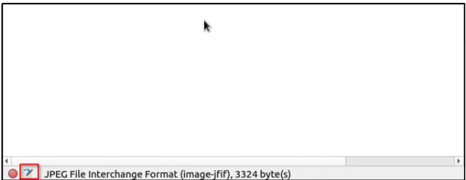
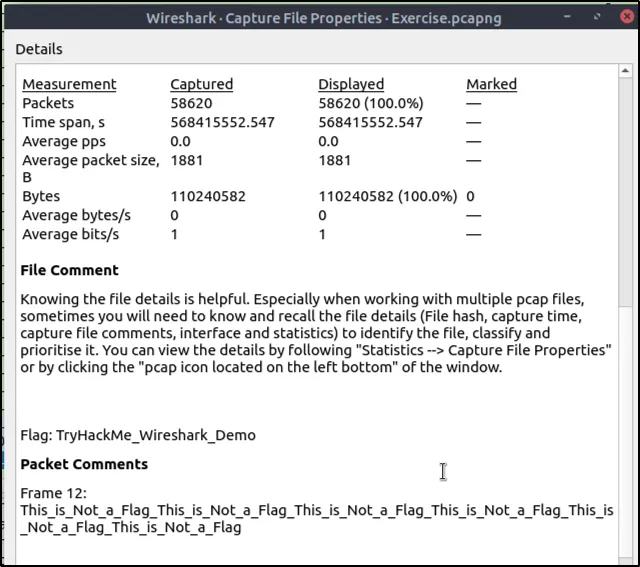
What is the total number of packets?
Ans: 58620
What is the SHA256 hash value of the capture file?
Ans: f446de335565fb0b0ee5e5a3266703c778b2f3dfad7efeaeccb2da5641a6d6eb
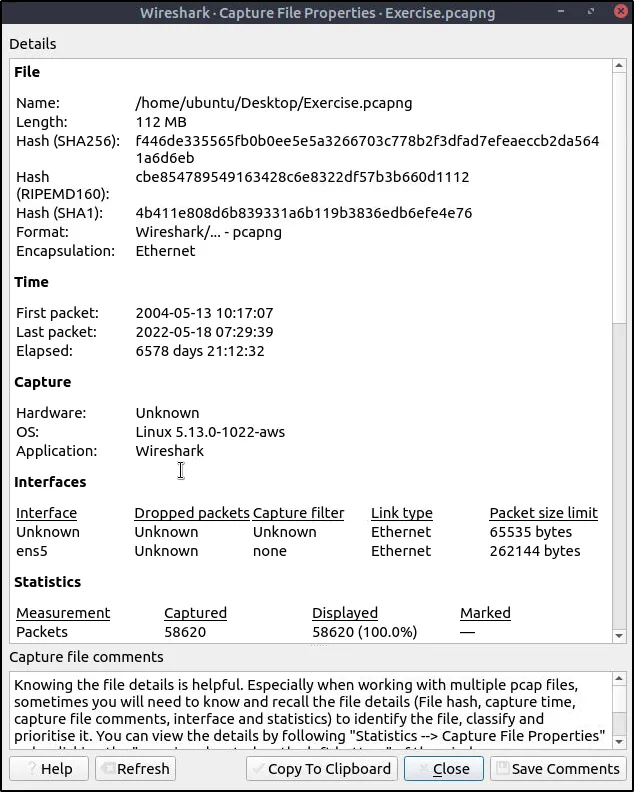
Task 3: Packet Dissection
Use the “Exercise.pcapng” file to answer the questions.
View packet number 38. Which markup language is used under the HTTP protocol?
Ans: eXtensible Markup Language
Press ctrl+g. That will open a dialog box to find specific packets, then ente
38 and click the button. We should be directed to packet 38.
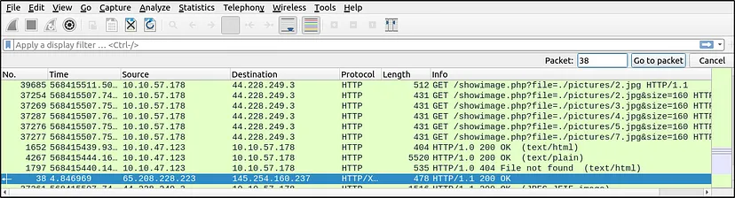
Within the packet details pane, under the HTTP protocol is the Markup Language used.
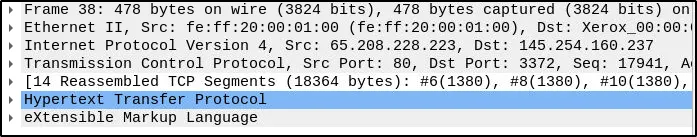
What is the arrival date of the packet? (Answer format: Month/Day/Year)
Ans: 05/13/2004
Still on packet 38, expand the Frame and it will show the details specific to
the Physical layer of the OSI model.
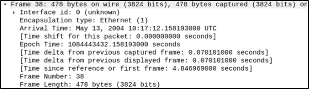
What is the TTL value?
Ans: 47
The TTL value is found in Layer 3 of the OSI model, which is the Network
Layer. Expand the Internet Protocol within the packet details pane.
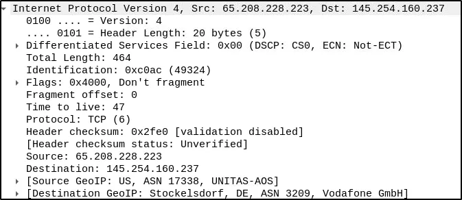
What is the TCP payload size?
Ans: 424
TCP details are found within the Transmission Control Protocol pane, which
is the 4th layer of the OSI model.
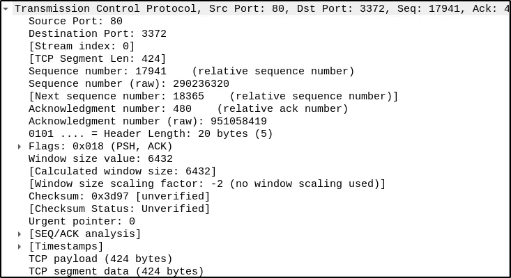
What is the e-tag value?
Ans: 9a01a-4696–7e354b00
This particular value is found in Hypertext Transfer Protocol pane, from the
Application protocol layer of the OSI model.
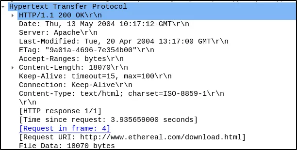
Task 4: Packet Navigation
Use the “Exercise.pcapng” file to answer the questions.
Search the “r4w” string in packet details. What is the name of artist 1?
Ans: r4w8173
Press ctrl+f to search for the string inside the packets.
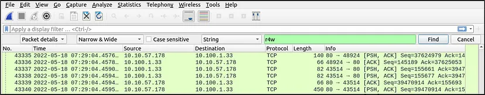
Within the details pane is the name of artist 1.
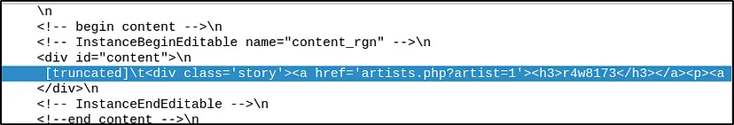
Go to packet 12 and read the comments. What is the answer?
Ans: 911cd574a42865a956ccde2d04495ebf
Press ctrl+g and enter the packet number and we will be directed to that packet.
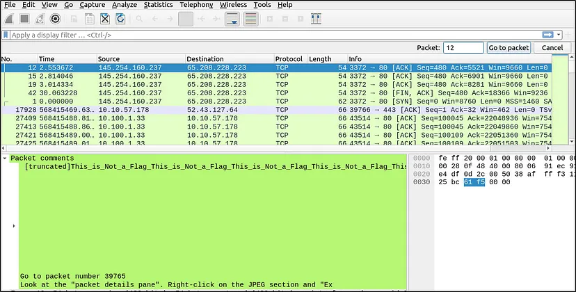
We see that there is a comment in the details pane but it is incomplete. To
read the full comment, we will go to Edit menu then select Packet Comment.
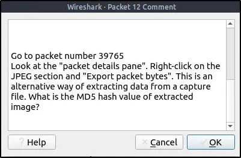
Upon reading the comment, we will go to packet 39765, look at the packet
details pane and export the packet bytes by right-clicking on the JPEG
section. As stated, this is another way of extracting data or objects from a
pcap file. I saved the JPEG file as “jpeg” in the Desktop directory.
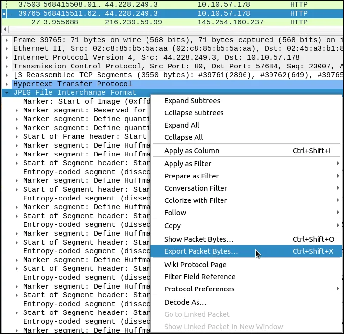
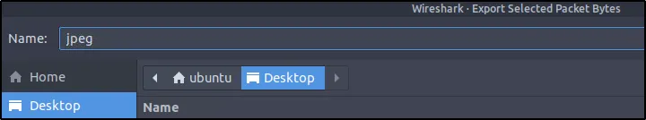
Open a terminal and we will extract the MD5 hash value of the image.
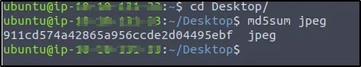
There is a “.txt” file inside the capture file. Find the file and read it;
what is the alien’s name?
Ans: PACKETMASTER
This is another method of exporting objects from a pcap file. Go to File
menu then select Export Objects and then HTTP (or whatever protocol that
may have been used to transfer objects). Save the “note.txt” file.
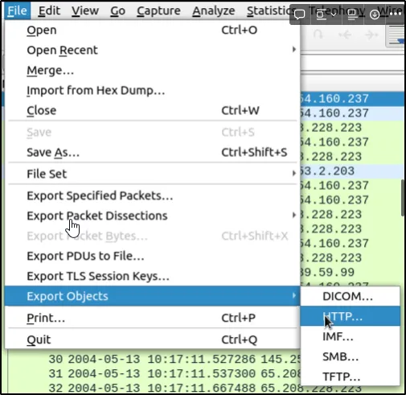
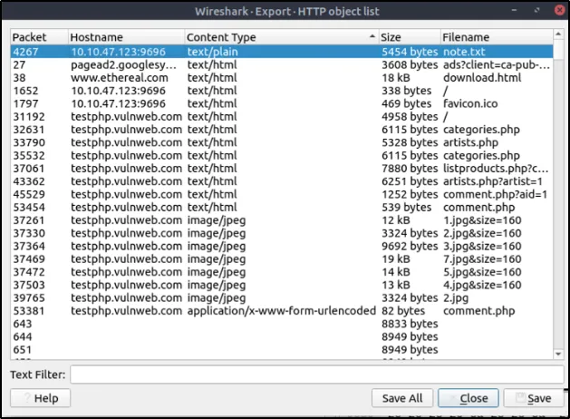
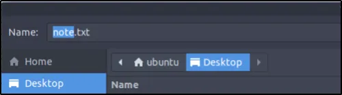
We can actually read the contents of the text file on the details pane but the
objective of this task is for us to learn how to export objects.
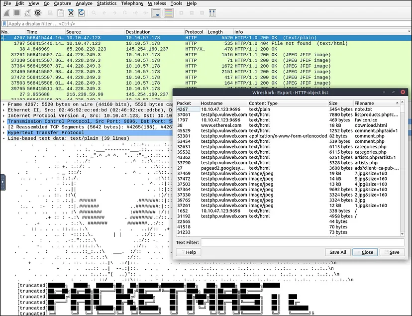
Open and read the contents of the file. We can use a text editor or terminal
to read the contents.
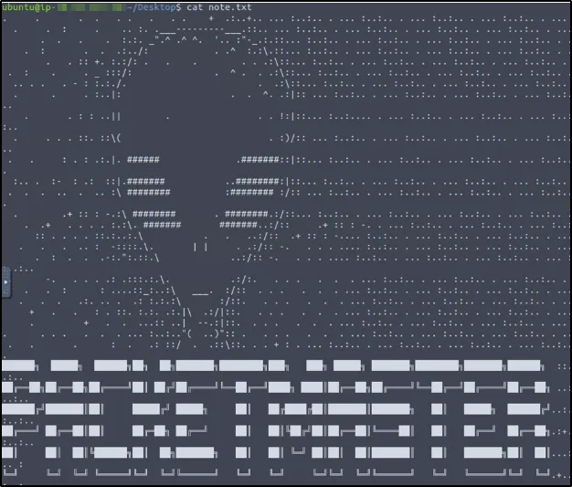
Look at the expert info section. What is the number of warnings?
Ans: 1636
We can either go to Analyze Menu then select Expert Information or at the
bottom left part of the status bar and click on the first image.
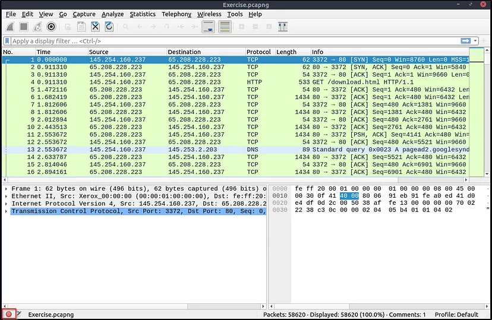
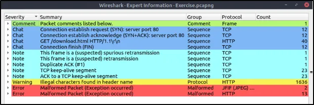
Task 5: Packet Filtering
Go to packet number 4. Right-click on the “Hypertext Transfer Protocol” and
apply it as a filter. Now, look at the filter pane. What is the filter query?
Ans: http
Press ctrl+g and enter packet number 4. Follow the instructions provided
then look at the Display filter of what filter has been applied.
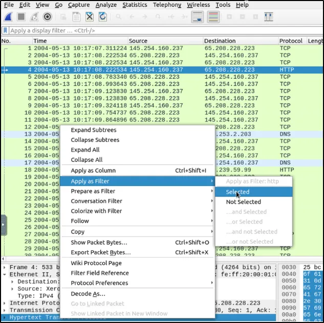
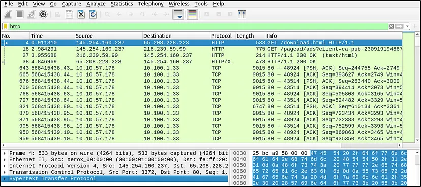
What is the number of displayed packets?
Ans: 1089
It is displayed at the bottom right-side of the status bar.
Go to packet number 33790 and follow the stream. What is the total number of artists?
Ans: 3
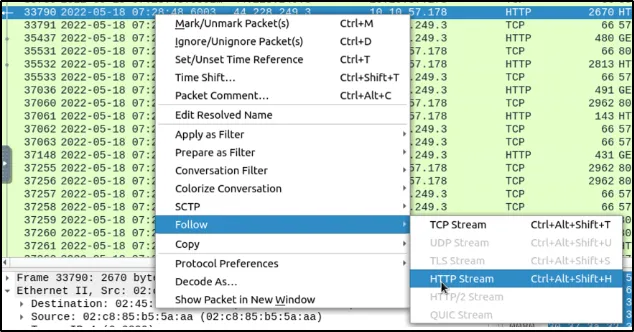
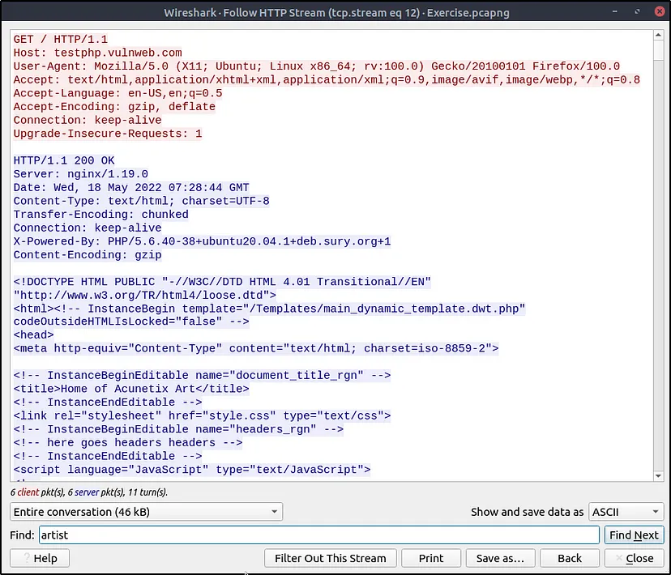
From the HTTP Stream we can search for the string “artist”.
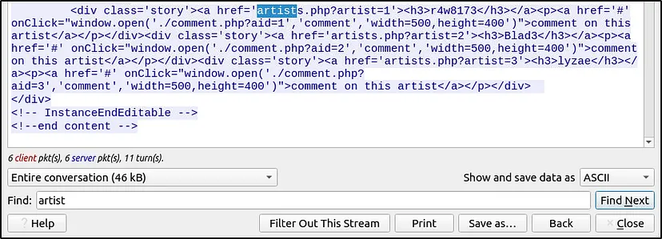
What is the name of the second artist?
Ans: Blad3
Modify the string to artist=2.
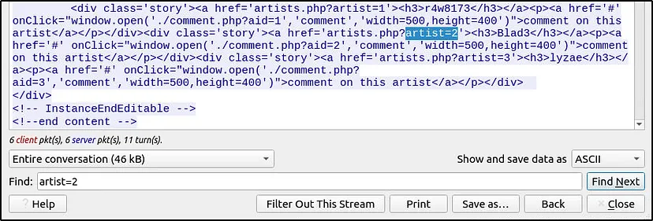